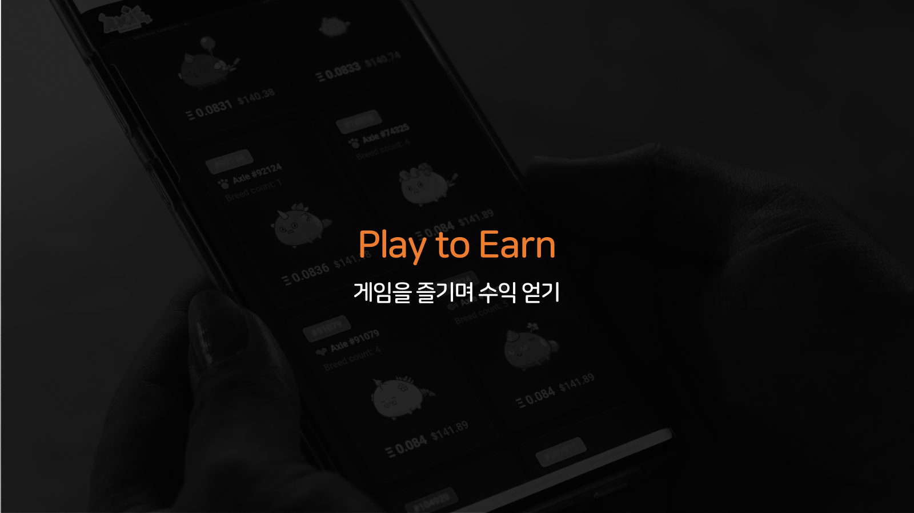
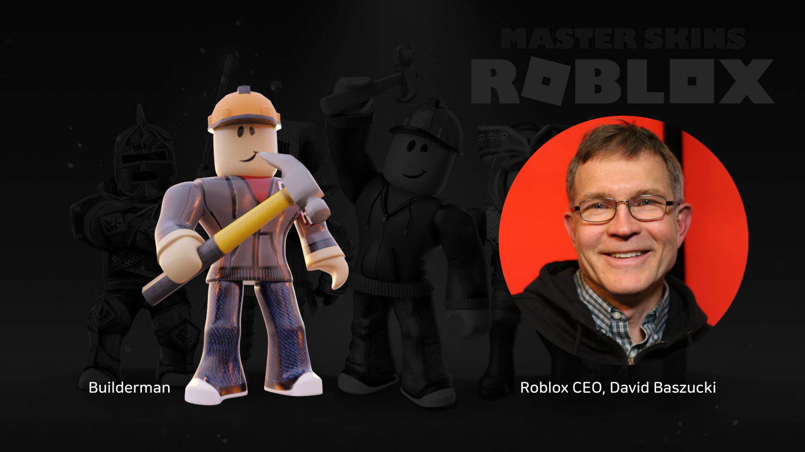
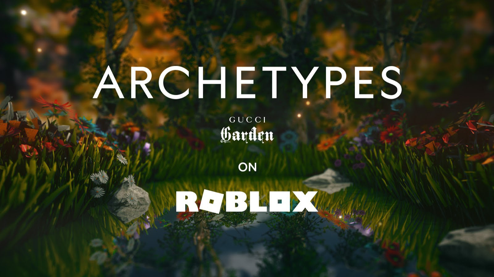
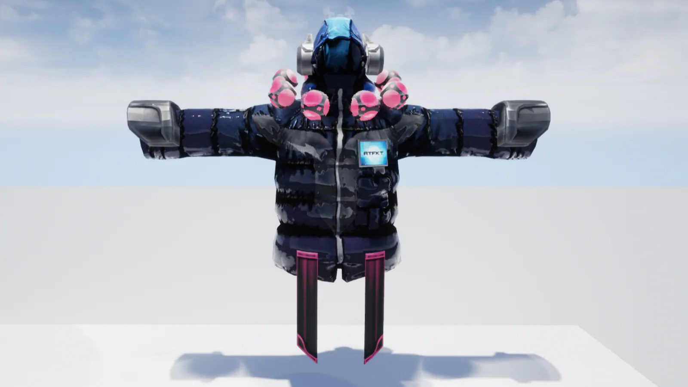
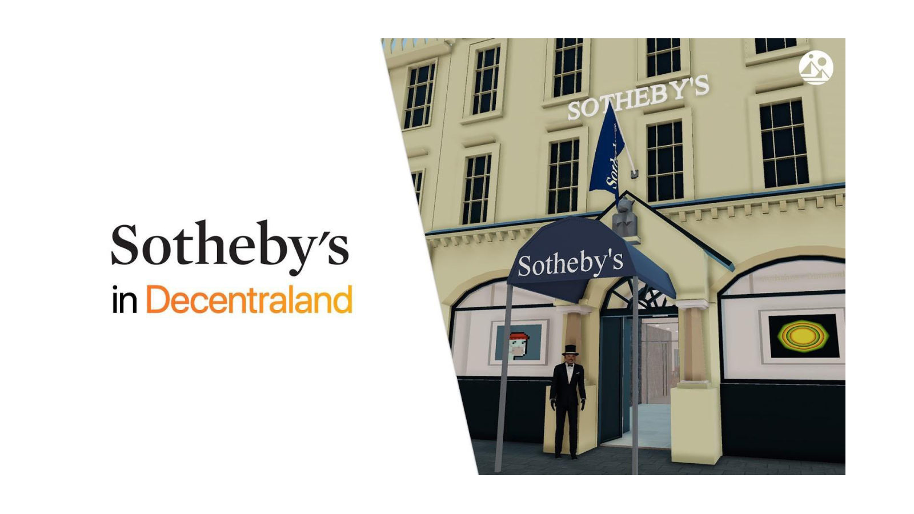
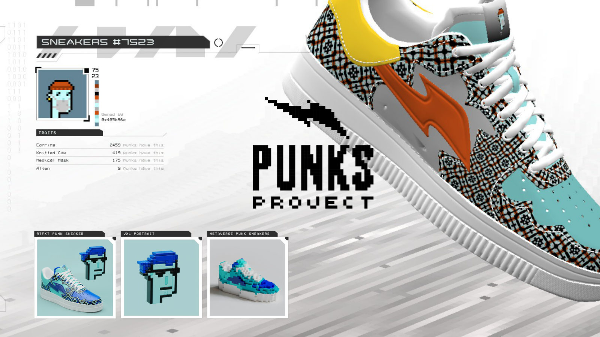
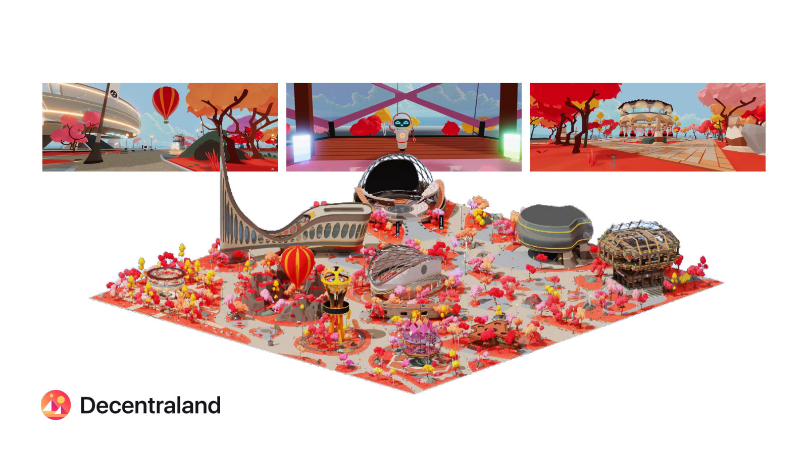
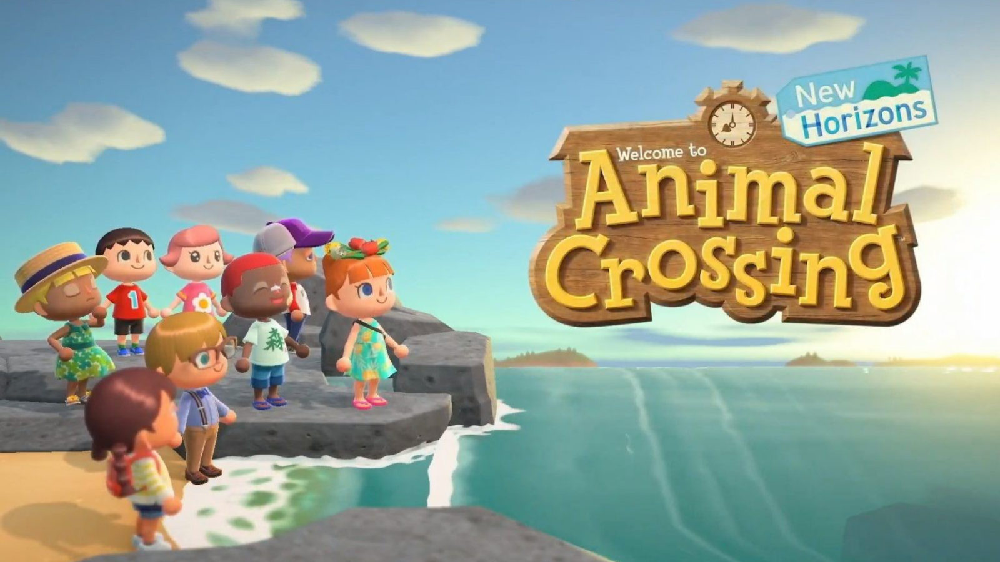
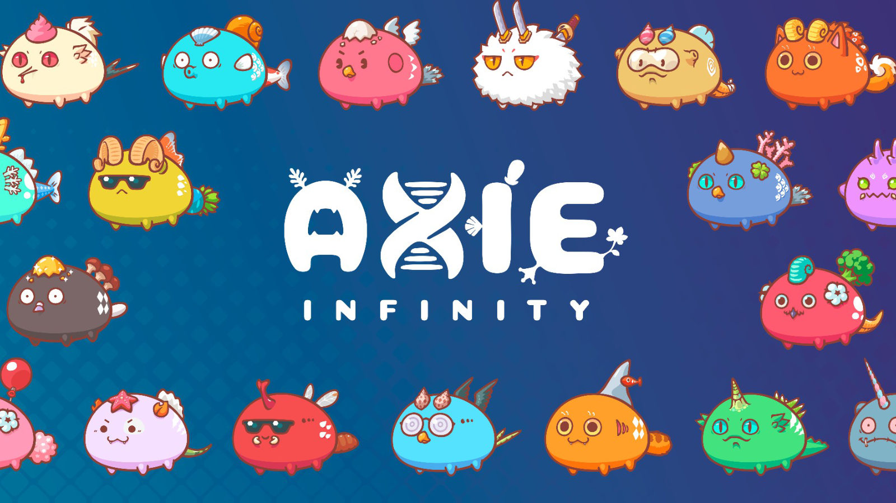
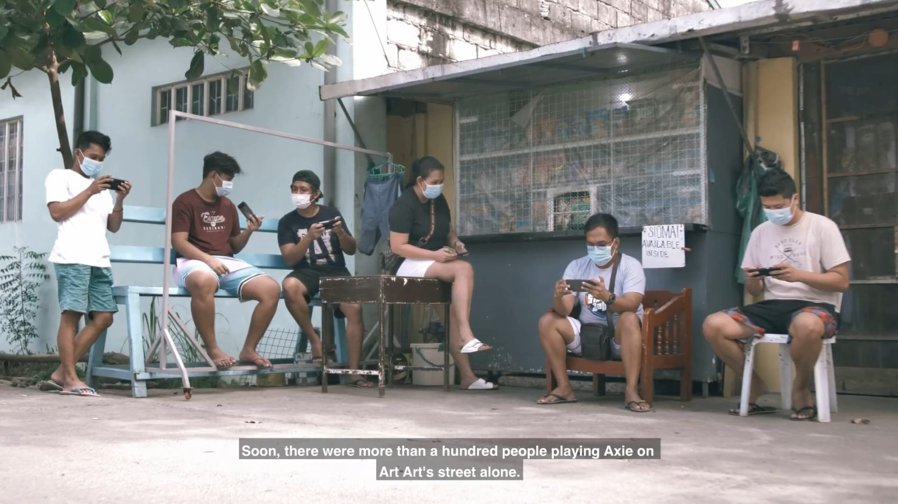

강연 전문 · Play to Earn in Metaverse
절 번호가 달린 완성 원고다. 이 발표는 녹음이 남아 있지 않아 노트가 그날의 말에 닿는 유일한 층이다. 노트가 붙어 있는 열 장만 싣는다.
노트 안의 O 는 원문 그대로다. 발표 직전까지 채우지 못한 수치 자리가 일곱 군데 있다.

1. Play to Earn이라는 새로운 개념의 등장
긴 시간, 우리는 생산적인 행위/시간과 소비적인 행위/시간을 구분하여 정의해왔습니다. 그 때문에 제가 오늘 말씀드리고자 하는 'Play to Earn'이라는 표현을 처음 듣게 되었을 때 그것을 모순적이라고 지적하실 수도 있습니다. 그러나 최근 우리의 주변에서 관찰되는 변화와 현상들을 관찰하면서 저는 '게임을 즐기며 수익 얻기＇라는 개념이 단지 일시적인 현상에 그치지 않고 점차 우리의 일상의 영역으로 확산될 것이라고 확신을 갖게 되었습니다

2. 로블록스와 창작자 생태계
지금 보시는 이 이미지는 '빌더맨'이라는 이름의 인기 아바타 입니다. 빌더맨은 실제 최근 메타버스 플랫폼의 대표 사례로 자주 언급되는 로블록스의 CEO 데이비드 바수츠키의 아바타인데요, 빌더맨을 통해 로블록스 속 가상 세계 안에서 유저들과 만나고 중요한 발표를 진행하기도 합니다. 저는 로블록스 안에서 릴 나스, 빌리 아일리쉬, 레이디 가가와 같은 슈퍼스타들은 여러 차례 만나 봤지만 정작 빌더맨은 아직 만나보지 못했네요.
현재 O세에서 OO세를 주요 타겟으로 월간 활성 유저 1억 6000만명, 누적 플레이 230억 시간이라는 압도적인 지표를 보여주고 있는 로블록스는 스스로를 게임이 아닌 몰입형 엔터테인먼트 플랫폼(Immersive Entertainment Platform)으로 정의합니다. 이 플랫폼 안에서는 유저 스스로가 제작, 배포한 OOOO개 이상의 콘텐츠가 새로운 유저를 기다리고 있는데, 알려진 바로는 $OOO 수준의 월 수익을 거두고 창작자가 OOO명 이상, 그리고 그들 중에는 10대 창작자의 수도 적지 않다고 합니다. 프로페셔널 게임 개발 회사에 의해 개발된 완성도 높은 콘텐츠보다 오히려 이러한 10대 창작자의 콘텐츠가 좋은 반응을 얻는 경우도 있다고 하니 생각할거리가 점점 많아지는 느낌입니다.

3. 메타버스 플랫폼을 통한 새로운 브랜드 접점
로블록스에서 475 Robux에 한정 판매된 가상 세계의 가방(Gucci Dionysus Bag)은 이후 유저 간 거래를 통해 350,000 Robux (약 460만원)까지 가격이 상승하기도 했습니다. 가상 세계에서만 사용할 수 있는 가방의 가치가 현실 세계 가방의 가치인 380만원을 넘어선 상황이죠. 이러한 시장을 Direct to Avatar(D2A)로 표현하기도 하는데요 2022년에는 D2A의 전체 시장 규모가 약 56조원에 이를 것이라는 전망도 있습니다.
구찌는 로블록스에서 Gucci Garden이라는 컨셉 공간을 열었고 또 다른 소셜 활동 중심의 메타버스 플랫폼 제페토에는 Gucci Villa를 운영하기도 했습니다. 이러한 플랫폼 내에서는 현재도 수많은 기업과 브랜드의 마케팅 활동이 이어지고 있는데요, 이제는 브랜드가 자신들의 상품과 메시지의 타겟이 이미 모여 있는 플랫폼을 찾아가 그것이 현실 세계든, 가상 세계든 구분 없이 새로움과 즐거움을 전해주기 위해서는 무엇이든 시도해보는 과감함이 중요한 때가 되었다는 생각입니다.
그런 가운데에 로블록스 안에서는 매월 OOO의 수익을 거두는 창작자의 수가 OOO명에 이르고, 제페토에서는 자신만의 패션 아이템을 제작하여 판매함으로써 1,500만원 이상의 월수익을 거두고 있는 개인 창작자가 등장하기도 했습니다.

4. 메타버스 플랫폼 내 크리에이터의 활약
이미지에 보시는 블록체인 기반의 NFT의 형태로 판매된 가상 세계의 패션 브랜드 RTFKT의 제품인데요, 애초에 세상에는 존재하지 않고, 입어볼 수도 없는 실험적인 디자인의 가상 패션 상품들을 계속적으로 선보이고 있습니다. 최근에는 18세의 비주얼 아티스트 FEWOCiOUS의 협업한 NFT 이미지를 온라인 상에서 단 7분만에 모두 판매함으로써 310만 달러의 매출을 기록하기도 했습니다.
이러한 NFT 기반의 아이템은 단지 가상 세계의 아바타에게 입혀주는 기능에 한정되지 않고, 현실 세계의 자신의 모습 위에 중첩시켜 사진을 찍을 수도 있구요, 자신이 원한다면 현실 세계의 실제 상품과 교환할 수도 있습니다. 현재 이러한 상품들의 가격은 수천만원을 호가하는 상황에서도 그 인기가 시들지 않는 상황입니다.

5. 가상 세계 자산의 가치, 노동 가치의 상승
최근에 세계 최대의 미술품 경매 회사인 소더비스가 디센트럴랜드라는 가상의 대지 위에 자신들의 갤러리를 오픈하고 그 안에서 NFT로 발행된 유명 디지털 아트 작품을 판매하였습니다. 이들 작품 중에는 현재 NFT 시장에서 가장 많은 시가 총액을 가지는 시리즈 중 하나인 크립토 펑크가 있는데요, 이 24x24 픽셀의 이미지에 불과한 크립토 펑크 중 가장 높은 가치를 가지고 있는 NFT는 그 가치가 700만 달러에 이를 정도입니다. 가상 세계에서의 전시는 물론, 소더비, 크리스티 등을 통한 현실 세계에서의 경매가 진행되기도 했구요, 이러한 미국의 한 지역 내 90개 이상의 디스플레이 광고를 활용한 공공 전시가 진행되기도 했습니다.

NFT는 블록체인 상에서 소유에 대한 증명이 이루어지는 한편, 누구나 그것을 채택하여 자신만의 서비스를 만들고 지속적으로 상호작용할 수 있는 잠재성을 가집니다. 앞서 소개해드린 가상 세계의 패션 브랜드 RTFKT는 크립토 펑크의 이미지 속 데이터를 기반으로 디자인이 자동 생성된 스니커즈를 NFT 보유자들에게 제공합니다. 하나의 NFT가 관심을 모은다는 것은 그것의 사용 범위가 확장됨으로써 실질적인 가치 증대로 이어지는 선순환의 고리를 완성하게 됩니다.
아직은 이러한 일련의 과정이 받아들이기 어려운 것이 사실인데요, 어쩌면 가상 세계 안에서 생겨나 그 가상 세계 안에서 가치를 만들어가고 있는 이러한 새로운 흐름을 애초에 현실 세계의 가치 기준을 놓고 이해하려는 시도 자체가 무의미한 일인지도 모릅니다.

이더리움 블록체인 상에 발행된 총 90,000의 NFT로 구성되는 디센트럴랜드에서는 각각의 LAND 소유자가 자유롭게 그 위 자신만의 가상 세계를 만들 수 있습니다. 제한된 공급에 비해 그 수요는 급격히 늘어남에 따라 LAND의 가치는 지금도 연일 상승하는 추세에 있습니다. 어찌보면 현실 세계의 대지를 가져보지 못한 젊은 세대가 이와 같이 가상 세계의 자산에 과감히 투자하는 일은 자연스러운 현상인지도 모릅니다.
저는 처음 이 프로젝트가 시작될 때부터 지금까지 여러 개의 LAND를 실제로 보유하고 있는데요, 유동성이 낮고 가격 변동 정보가 턱없이 부족한 현실 세계의 부동산과 달리, 블록체인 상에 모든 데이터가 실시간 공개되어 있는 NFT 기반의 가상 부동산은 NFT Bank와 같은 서비스를 통해 매주 나의 자산 가치 변동에 대한 리포트를 제공 받을 수 있어 오히려 현실보다 더 손에 잡히는 자산이라는 생경함을 전해 주기도 합니다.

지금 보시는 사례는 올해 초 LG전자가 OLED TV를 테마로 동물의 숲이라는 게임 안에 제작한 여러 개 섬들의 모습이구요, 저는 이 프로젝트 내에서 직접 섬을 제작해서 LG전자에 판매함으로써 게임을 플레이하는 것이 실질적인 현실 세계 내 경제활동으로 이어지는 경험을 가지게 되었습니다. 여기서 인상적이었던 점은 이러한 가상 세계 안에서의 노력에 대한 보상이 동일한 시간 현실 세계에서의 수익보다 더 크다는 점이었습니다. 아직 경쟁이 없고 수요과 공급이 일대일 수준으로 매칭되는 초기 시장에서의 한시적 기회가 이닐까 하는 생각이 듭니다.

6. Play to Earn의 기반이 되는 커뮤니티
NFT를 통해 디지털 아트를 구매한 구매자는 온라인을 통해 자신이 보유한 작품을 소개하고 그것의 가치를 높이기 위한 자발적 활동을 주저하지 않습니다. 지금 보시는 엑시 인피니티는 게임 내에서 사용 가능한 캐릭터와 랜드, 아이템 등이 모두 NFT로 구현되어 있습니다. 재밌는 점은 이 게임을 즐기는 플레이어들이 비교적 높은 금액의 투자금을 가지고 이 게임 안에 진입하고 얼마 지나지 않다 투자금을 환수하는 것은 물론 이후 지속적으로 높은 수익을 거두고 있다는 점입니다. 그리고 이를 바탕으로 하는 커뮤니티가 지금의 생태계를 점점 더 단단하게 다져가고 있습니다.
이러한 특성으로 인해 엑시 인피니티를 단순히 게임으로 봐야할지, 하나의 투자 플랫폼으로 봐야할지 그 경계가 모호할 지경입니다. 이 게임이 슬로건으로 제시하는 Play to Earn의 매커니즘이 실질적인 선순환으로 이어졌다는 점은 우리에게 많은 것을 시사합니다.

현재 필리핀에서 일어나고 있는 엑시 인피니티 기반의 Play to Earn 현상을 그린 한 다큐멘터리인데요, 코로나19로 인해 일자리를 잃거나 일자리를 구하지 못해 실의에 빠진 사람들에게 새로운 수익과 현실을 살아갈 의지를 제공하기도 합니다. 또한 하루 하루의 일상에서 게임으로 인해 즐거움을 되찾는 노년층의 이야기가 소개되기도 합니다. 이들은 함께 연대함으로써 서로에게 배우고 가르치며 더 나은 삶으로 나아가기 위한 공동체적 노력을 기울이기도 합니다. 이러한 모든 것이 가상 경제 속에 펼쳐지는 열린 기회를 통해 시작된 일이죠. 지금도 이러한 현상은 필리핀, 인도네시아, 베네주엘라, 브라질 등을 중심으로 빠르게 확산되는 상황에 있습니다.